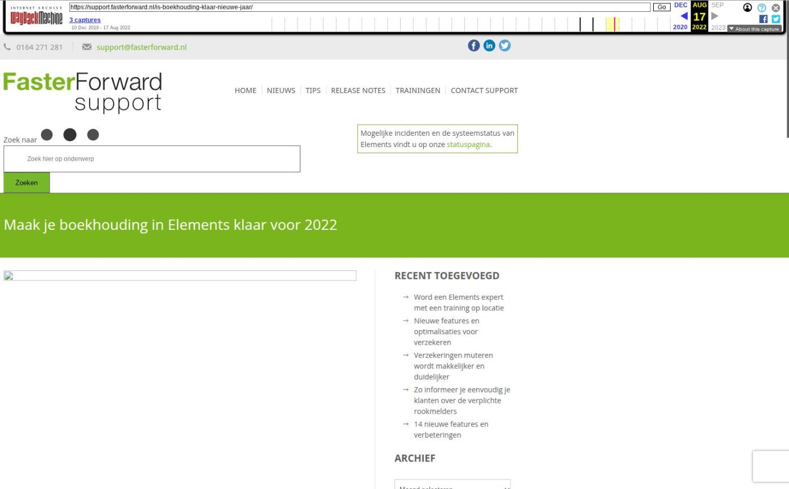

Optimalisaties voor serviceproviders en account deblokkeren

Tekstinhoud
Op donderdag 1 juni is Elements weer verbeterd en uitgebreid met nieuwe features! Deze release bevat uitbreidingen en optimalisaties voor advieskantoren en serviceproviders.
Serviceproviders
Optimalisaties voor beoordeling en verwerking stukken door volmacht en serviceprovider
Afkeurredenen gemakkelijk in te stellen en te beheren
Advieskantoren
Gebruikersaccount deblokkeren
Stukken aangevraagd door maatschappij niet meer handmatig te verwijderen
Aanvragen inkomensverklaring ondernemer vanuit Elements
Melding e-mail niet verzonden verduidelijkt
Overige verbeteringen
Serviceproviders
Optimalisaties voor beoordeling en verwerking stukken door volmacht en serviceprovider
In de hypotheekkaart kan je zien en aangeven of de hypotheek volmacht is of niet. Wanneer een hypotheek volmacht is dan dienen de stukken ook door een volmacht beoordeeld te worden. In de stukkenlijst zijn onder andere hiervoor diverse veranderingen doorgevoerd, namelijk
Vanuit één scherm is het mogelijk om het stuk in te zien, het document te bewerken, het stuk te beoordelen en voorgaande afkeuringen document in te zien. Dit scherm is op maat gemaakt voor de serviceprovider en volmacht
Bij het verzenden van een documentbericht (DX) wordt de status van de serviceprovider en maatschappij gecontroleerd
In de kolom 'DX verzonden' wordt door middel van kruisjes en vinkjes zichtbaar of het wel of niet gelukt is om het DX bericht te verzenden en ontvangen is door de maatschappij
Door middel van een icoon is direct zichtbaar of het stuk bij een volmachtaanvraag hoort
Er zijn nieuwe tags gemaakt die laten zien of het stuk wel of niet is beoordeeld door de serviceprovider of volmacht
DX berichten en DA berichten worden correct verwerkt in de stukkenlijst conform de dienstverlening serviceprovider
Het is mogelijk om DX berichten te verzenden vanuit de workflow
Afkeurredenen gemakkelijk in te stellen en te beheren
Bij het afkeuren van stukken wordt er regelmatig gebruik gemaakt van dezelfde afkeurredenen. De afkeurreden wil je gemakkelijk kunnen toevoegen aan een stuk, zodat je deze niet altijd zelf erbij hoeft te typen. In de module 'Standaard afkeurreden voor stukken' is het mogelijk om afkeurredenen toe te voegen, wijzigen of te verwijderen. Deze afkeurredenen kan je koppelen aan type documenten. Bij het afkeuren van zo'n type document zie je direct de gekoppelde afkeurredenen, waaruit je vervolgens de juiste reden kunt selecteren. Zowel de serviceprovider als volmacht kan deze module gebruiken.
Advieskantoren
Gebruikersaccount deblokkeren
In de vorige release is het mogelijk gemaakt om vanuit één overzicht een nieuw wachtwoord aan te maken of de two factor te resetten voor een gebruikersaccount. Hieraan is nu toegevoegd dat het ook mogelijk is om het account te deblokkeren. Dit kan je doen door op het rode sleuteltje te klikken. Na het klikken op het rode sleuteltje wordt de sleutel geel. Door te klikken op de gele sleutel kan je een nieuw wachtwoord aanmaken.
Stukken aangevraagd door maatschappij niet meer handmatig te verwijderen
Vanaf nu is het niet meer mogelijk om stukken die zijn opgevraagd of beoordeeld zijn door de maatschappij (via een DA-bericht) handmatig te verwijderen. Zo is gedurende het gehele aanvraagtraject duidelijk welke stukken de maatschappij heeft opgevraagd en hoe deze beoordeeld zijn. De stukken kunnen enkel verwijderd worden via de workflow. Dit gebeurt 1 maand na het passeren van de hypotheek of wanneer de aanvraag niet doorgaat. Stukken die door de gebruiker zelf zijn toegevoegd kunnen wel ten alle tijde handmatig worden verwijderd.
Aanvragen inkomensverklaring ondernemer vanuit Elements
Vanaf nu is het mogelijk om voor je klanten een inkomensverklaring ondernemer vanuit Elements aan te vragen. Zo hoef je niet meer in te loggen in een extranet, heen en weer te mailen en gegevens handmatig over te typen. De inkomensverklaring vraag je eenvoudig digitaal aan via HDN vanuit het tabblad 'Zakelijk inkomen' onder een dienst.
In dit artikel lees je hoe het werkt.
Wil je hiervan gebruik maken? Stuur dan een e-mail naar support@fasterforward.nl.
Melding e-mail niet verzonden verduidelijkt
Bij het verzenden van de e-mail kan de foutmelding 'Er is iets fout gegaan bij het verzenden van uw e-mail. Verstuur de e-mail opnieuw' verschijnen. Deze foutmelding kan vele verschillende redenen hebben. Eén van deze redenen, namelijk tijdens het opstellen van de e-mail is de sessie verlopen en er is opnieuw ingelogd, wordt nu duidelijker weergegeven. De melding die dan wordt getoond, is 'Sinds het opstellen van uw e-mail is uw Elements-sessie verlopen en bent u opnieuw ingelogd. Controleer de inhoud en verstuur de e-mail nogmaals.'
Overige verbeteringen
Wanneer je de polis royeerde door middel van een mutatievoorstel dan werd er geen rappeltaak aangemaakt ook al had je dit aangevinkt. Dit is nu hersteld, waardoor er wel een rappeltaak wordt aangemaakt.
Bij het verwerken van Aplaza berichten, wanneer je werkt met mutatievoorstellen, kon het gebeuren dat polissen dubbel werden aangemaakt. Hiervoor is een oplossing gemaakt, waardoor dit nu niet meer gebeurt. Daarnaast zijn er verbeteringen doorgevoerd in het handmatig aanvullen van het Aplaza bericht. Zo wordt er een melding getoond, wanneer bijvoorbeeld het adres en postcode niet correct verwerkt kunnen worden.
Het was mogelijk om in de ADN batch posten te verwijderen, waarvan al een TP incassoboeking was gemaakt. Ondanks het verwijderen van de post werd deze TP incassoboeking ongewenst definitief geboekt. Hierdoor is het nu niet meer mogelijk om posten, waarvan een TP incassoboeking is gemaakt, te verwijderen.
Wanneer er geklikt werd op de knop 'Polissen opnieuw matchen/controle journaalpost aanmaken' (ADN 3.0) dan kon het gebeuren dat reeds gematchte posten hierdoor beïnvloed werden. Dit is niet correct. Als er nu op de knop wordt geklikt, wordt er alleen gekeken naar nog niet gematchte posten.
De module 'Gemiddelde doorlooptijden' kan gebruikt worden om de rappeltaken op het juiste moment van de geldverstrekker aan te maken. Hierin waren de clusterorganisaties opgenomen, maar die konden voor een onduidelijke berekening zorgen. Hierdoor staan de clusterorganisaties niet meer in de module.
Geplaatst op 26 mei 2023 (Laatste update: 20 juni 2023)
Laatste 5 releasenotes
Nog meer data en documenten vergelijken »
Gemakkelijk data en documenten vergelijken »
Verbeteringen boekhouding en facturatie »
Verbeteringen gespreksopname en onder de motorkap »
Verbeteringen onder de motorkap en gespreksopnames »